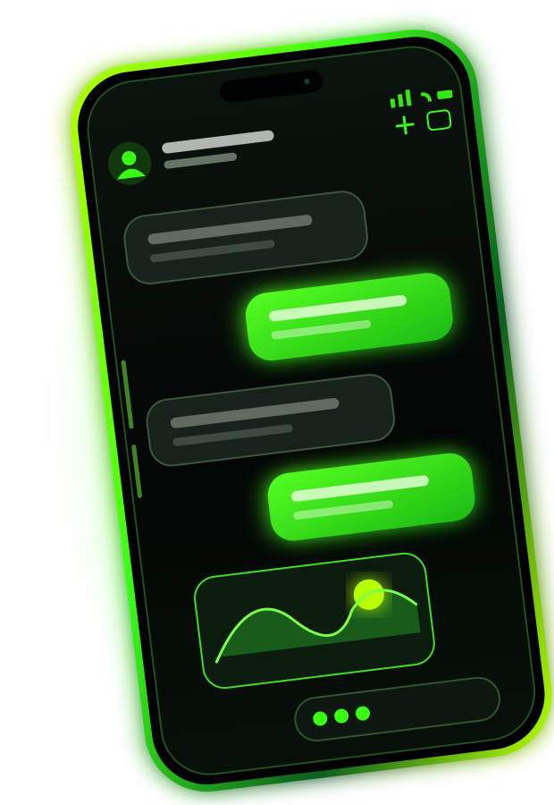

تجربة تواصل متكاملة
محادثات خاصة ومجموعات وقنوات بث ومنشورات وقصص ومكالمات صوتية ومرئية — كل ذلك ضمن تطبيق واحد.
الموقع الرسمي
منصة مراسلة متكاملة قيد التطوير، تجمع المحادثات الخاصة والمجموعات وقنوات البث والمكالمات الصوتية والمرئية في تجربة داكنة أنيقة، مع إعدادات خصوصية قابلة للتخصيص.
⊙هذا موقع تعريفي رسمي. التطبيق نفسه لم يُتح للاستخدام بعد.

عن المشروع
LAST VERSE PRO تطبيق مراسلة قيد التطوير يهدف إلى تقديم تجربة تواصل عصرية وبسيطة، تجمع المحادثات الخاصة والمجموعات وقنوات البث والمنشورات والقصص والمكالمات الصوتية والمرئية، بواجهة داكنة أنيقة وإعدادات قابلة للتخصيص.
محادثات خاصة ومجموعات وقنوات بث ومنشورات وقصص ومكالمات صوتية ومرئية — كل ذلك ضمن تطبيق واحد.
إعدادات خصوصية مخططة ضمن المشروع، من بينها إمكانية إخفاء حالة الكتابة عن الآخرين.
دعم مخطط للعربية والإنجليزية والتركية والفرنسية، مع واجهة داكنة مريحة للعين.
لمحة سريعة
جميع ما يلي مزايا مخططة للمشروع ولم تُطلق بعد.
محادثات فردية مباشرة بواجهة بسيطة وسريعة.
↗مجموعات مخططة لاستيعاب نحو 300 إلى 400 عضو.
↗قنوات بمالك واحد وما يصل إلى 20 مشرفاً.
↗مساحة مخططة لمشاركة المنشورات واللحظات.
↗تواصل صوتي ومرئي ضمن خطة التطبيق.
↗خيارات تحكم مخططة، ومنها إخفاء حالة الكتابة.
تابع المشروع
تعرّف على تفاصيل المزايا المخطط لها أو تواصل معنا للاستفسارات والتعاون.